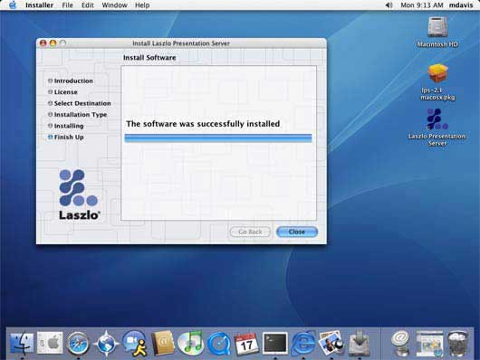

Running Laszlo applications using Laszlo Presentation Server
Note: These instructions are for the Standard @VERSIONID@ release.
Click here if you installed the Core distribution. If you are upgrading from a previous version of the LPS, please see the upgrade instructions.
To run your first Laszlo application after installing:
- Verify the install:
- Create and run your own applications.
To run a Laszlo application once you have successfully installed the Laszlo Presentation Server:
- Start Tomcat:
When you installed Laszlo for Windows, it created a program group in your Start menu called
Laszlo Presentation Server. From the Start menu, under Programs, under
Laszlo Presentation Server, click on Start Tomcat for LPS.
The Tomcat log window should remain on your display. If it closes, then Tomcat is no longer
running. If this happens, make sure there are no other services (including other copies of
Tomcat) running on port 8080. You can diagnose Tomcat startup failures by getting to a DOS
prompt and running the startup script by hand as
yourInstallationDir\Server\tomcat-5.0.24\bin\catalina.bat run
- Run Laszlo's hello.lzx application to verify
that LPS is installed correctly and that Tomcat has started correctly. (The first application
may take 30 seconds or so to start.)
- Your browser should display something like:
- If your browser does not display the Hello, Laszlo! greeting,
please see the installation instructions.
- Click here for information about running your own Laszlo applications.
Running Laszlo applications on Linux
To run a Laszlo application once you have successfully installed the Laszlo Presentation Server
-
Start Tomcat:
Assuming you have set JAVA_HOME to point to the directory
in which Java is installed, enter:
lps-@VERSIONID@/Server/tomcat-5.0.24/bin/startup.sh
If there is a problem, the error is reported in the console.
If this happens, make sure there are no other processes (including other copies of
Tomcat) running on port 8080.
-
Run Laszlo's hello.lzx
application to verify that LPS is installed correctly and that Tomcat has
started correctly. (The first application
may take 30 seconds or so to start.)
-
Your browser should display something like:
-
If your browser does not display the Hello, Laszlo! greeting,
please see the installation instructions.
-
Click here for information about running
your own Laszlo applications.
Running Laszlo applications on Mac OS X
To run a Laszlo application once you have successfully installed the Laszlo Presentation Server:
- Start Tomcat:
When you installed Laszlo, it placed an icon on your desktop:

To start Tomcat, double-click the LPS Start Tomcat.term icon.
Note: If you move the Tomcat directory, this icon will no longer start Tomcat.
- Run Laszlo's hello.lzx application to verify
that LPS is installed correctly and that Tomcat has started correctly. (The first application
may take 30 seconds or so to start.)
- Your browser should display something like:
- If your browser does not display the Hello, Laszlo! greeting,
please see the installation instructions.
- Click here for information about running your own Laszlo applications.
Running your own Laszlo applications
To run a Laszlo application that you have created or modified, you must either:
- Put your .lzx files and art assets inside the my-apps folder or a subdirectory within the my-apps folder
inside the lps-@VERSIONID@ Web application.
For example, if you installed LPS using the Windows installer, the my-apps directory is at:
yourInstallationDir\Server\lps-@VERSIONID@\my-apps
For Linux and OS X, the my-apps directory is at:
yourInstallationDir/Server/lps-@VERSIONID@/my-apps
To display the application in your browser, browse to:
http://localhost:8080/lps-@VERSIONID@/my-apps/yourApplicationName.lzx
Note: If your modifications do not show, click the browser's reload button.
or, you can
- Create your own Laszlo-enabled Web application inside your servlet container.
To create a Laszlo-enabled Web application:
- Create a new directory for your application (on Linux/MacOSX/Unix)
mkdir myappdir
mkdir myappdir/WEB-INF
(on Windows) mkdir myappdir
mkdir myappdir\WEB-INF
- Copy the
lps sub-directory. (on Linux/MacOSX/Unix):
cp -r yourInstallationDir/Server/lps-@VERSIONID@/lps myappdir
(on Windows)
copy yourInstallationDir\Server\lps-@VERSIONID@\lps myappdir\lps
- Copy the
lib and lps directories
and web.xml file from the LPS web
application into your web application. For @VERSIONID@ release you can find these
directories atyourInstallationDir\Server\lps-@VERSIONID@\WEB-INF (Windows)
yourInstallationDir/Server/lps-@VERSIONID@/WEB-INF (Linux)
For LPS Core, you can find these direectories at
yourInstallationDir\lps-@VERSIONID@\WEB-INF (Windows Core)
yourInstallationDir/lps/lps-@VERSIONID@/WEB-INF (Linux, OS-X Core)
Copy them into your applications WEB-INF directory.
WARNING:
Make sure you duplicate the precise directory structure of the WEB-INF directory when you place these files and
directorie into your newly-created directory.
- Put the .lzx files and art assets that make up your application inside the new directory you
created, or put them into a subdirectory you create inside of it.
- Consult your servlet container documentation for a information about how to deploy this Web application into the container.
For Tomcat, you can copy this directory into
tomcatInstallationDirectory\webapps\your-application-dir (Windows)
tomcatInstallationDirectory/webapps/your-application-dir (Linux, OS-X)
Congratulations! You have successfully installed Laszlo Presentation Server and run your first Laszlo application.
Now, check out the Laszlo Explorer for links to documentation, tutorials, examples, samples and more.
Copyright © 2002-2008 Laszlo Systems, Inc.
All Rights Reserved. Unauthorized use, duplication or
distribution is strictly prohibited. This is the proprietary
information of Laszlo Systems, Inc. Use is subject to license terms.